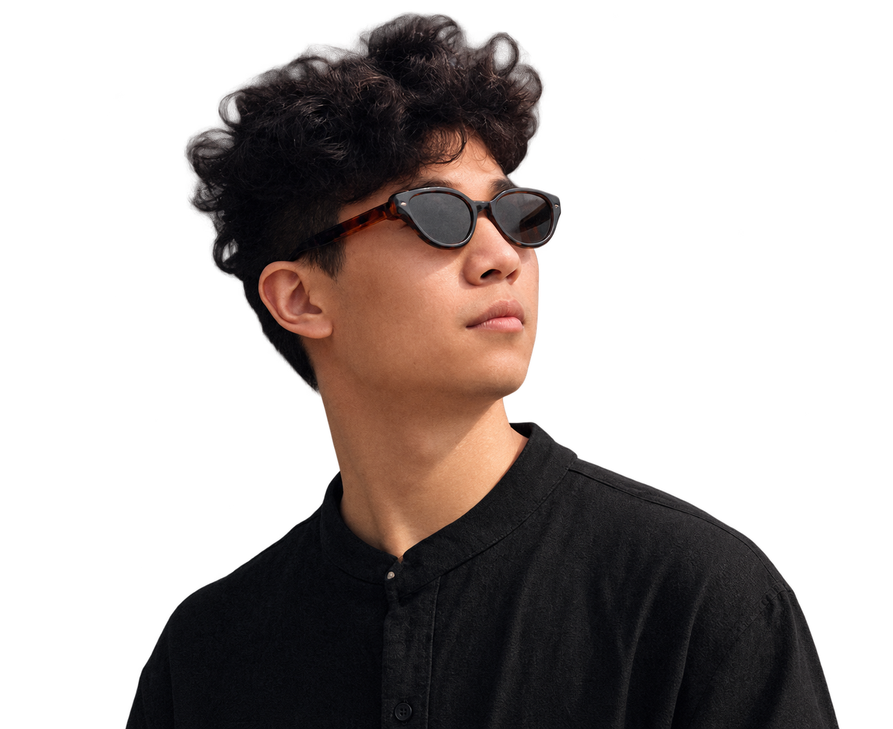

Urban Planning · Spatial Thinking
AI Product · Digital Experiences

乌镇千年水乡肌理，小桥流水间的空间启蒙。 从城乡规划到产品经理，空间认知的起点。
西南交通大学建筑学院城乡规划专业，专业排名前 10%。
研究领域：古建数字孪生、BIM 建模、空间句法等。曾发表三篇国际会议论文，获设计类奖项与国奖若干。最后自愿放弃保研直博，开启新篇章。
[工作经历占位符]
AI 产品运营，讯飞智文 AIPPT。
从空间规划到 AI 产品的跨界探索。
[硕士经历占位符]
香港大学计算机与数据科学学院。
电子商务与互联网工程硕士。
[实习经历占位符]
去哪儿推荐策略产品，美团商业化策略产品。
数据驱动的互联网产品实践。
[上海经历占位符]
外滩天际线与陆家嘴的金融脉搏。
从首都到魔都，追寻更大的产品舞台。